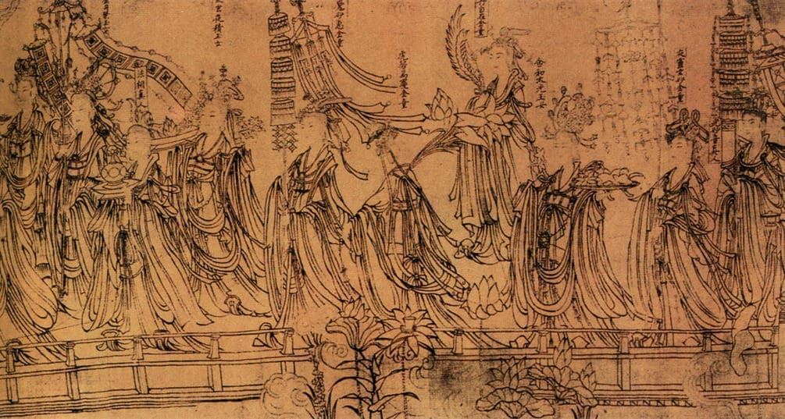

武宗元《朝元仙仗图》

《朝元仙仗图》卷所表现的是道教故事，描绘众神朝觐道教最高天神——元始天尊的宏大场面。构图的宏伟壮丽，结构严密， 都和谐地统一在庄严愉悦和徐缓的优美韵律之中。全画以莼菜条线描勾出，不施彩色，线条转折流动有变化， 体现出“天衣飞扬，满壁风动”的吴家样特色。
《朝元仙仗图》卷所表现的是道教故事，描绘众神朝觐道教最高天神——元始天尊的宏大场面。构图的宏伟壮丽，结构严密， 都和谐地统一在庄严愉悦和徐缓的优美韵律之中。全画以莼菜条线描勾出，不施彩色，线条转折流动有变化， 体现出“天衣飞扬，满壁风动”的吴家样特色。
《西园雅集图》白描入画。著录于清内府藏书画专著《石渠宝笈》。画中每个人的表情动态在李公麟笔下皆栩栩如生、 动静自然，人物衣纹草石花木，每一笔线条都处理得十分精致，游动的墨线节奏率然朗快、迂回荡漾，整幅画面潇洒、 隽逸、焉然欲绝。无怪在此之后仇英、张大千等名家皆倾注全力摹写公麟之本。
《清明上河图》描绘的是清明时节北宋都城汴京（今河南开封）东角子门内外和汴河两岸的繁华热闹景象。 全卷画面内容丰富生动，集中概括地再现了12世纪北宋全盛时期都城汴京的生活面貌。
画中货郎推车，来到一株梅花树下。梅花开放，暗香四溢，增添不少喜庆气息。车上货物琳琅满目，品种丰富，令人眼花缭乱。 货郎脸上含笑，手指某一货物，正回身观望。边上几个童子嬉戏打闹。该图画技上采取了写实的手法，尽管货车的货物很多， 但却井然有序地描绘了每种物品的形状、色泽。人物塑造主要用劲细的线条描绘出人物的衣襟，尤其是对孩童的造形、神态的刻画更为细腻。
李唐的《胡笳十八拍》以一拍一画的连环画方式表达，从第一拍蔡文姬被匈奴人掳走，到最后一拍蔡文姬离别骨肉重返故乡长安， 使蔡文姬的整个坎坷命运的故事情节完整形象地表达出来。
《望贤迎驾图》是描写唐安史之乱后，唐肃宗李亨迎接从四川返回长安的父亲玄宗李隆基过望贤驿的情状，是一幅历史题材的艺术杰作。
"牧溪是中国早期的禅僧，在中国并未受到重视。似乎是由于他的画多少有一些粗糙，在中国的绘画史上几乎不受尊重。而在日本却受到极大的尊重。 中国画论并不怎么推崇牧溪，这种观点当然也随着牧的作品一同来到了日本。虽然这样的画论进入了日本，但是日本仍然把牧溪视为最高。"——川端康成
梁楷是一位具有禅宗思想的画家，他通过描绘禅宗六祖惠能大师日常生活中一个砍竹的情景，不着痕迹地把惠能大师的这种理论给予了充分体现。